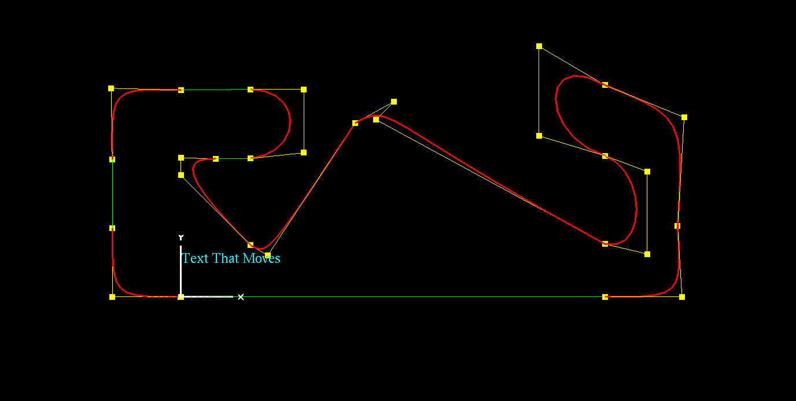
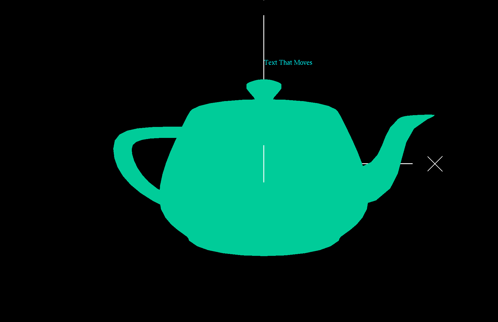
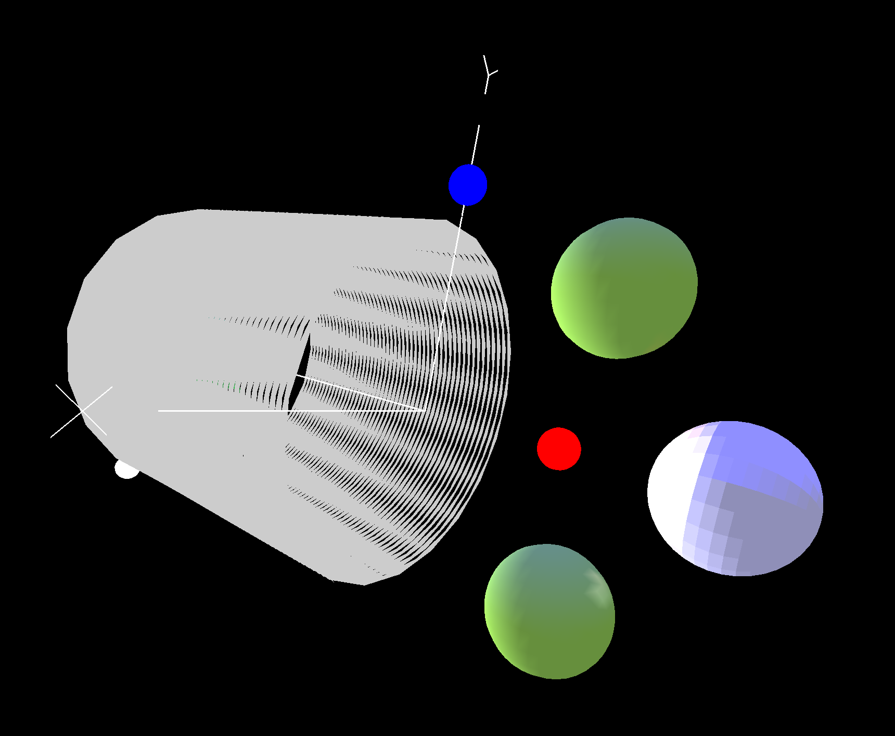
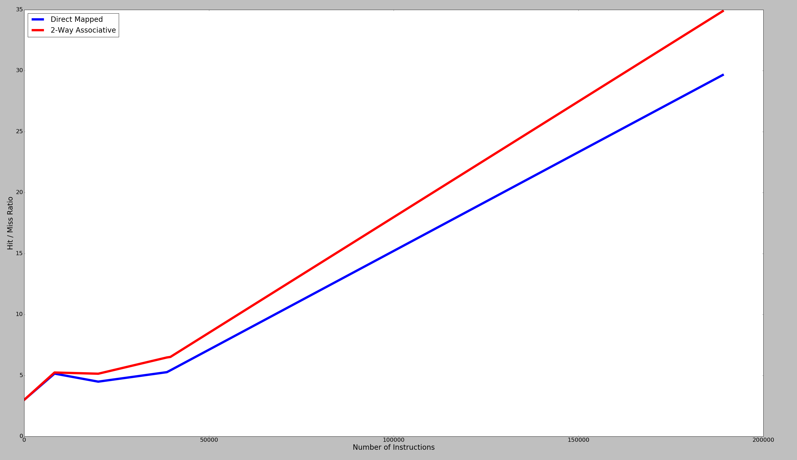
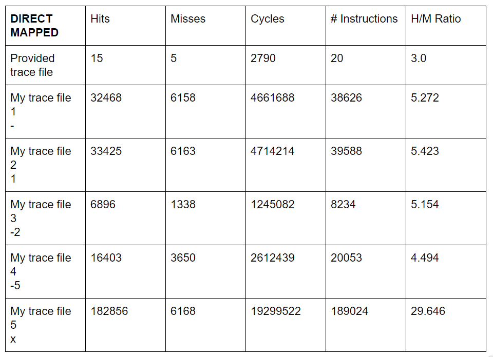
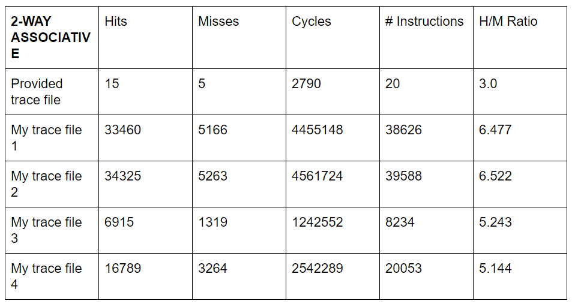

Global Formula Racing

As a part of my senior project at Oregon State I chose to help develop an autonomous race car for Global Formula Racing. This car would compete at formula student competitions in Germany and Spain in the summer of 2019. I was responsible for the simultaneous localization and mapping portion of the project, also known as slam. A slam implementation is able estimate the location of the car and its surroundings simultaneously without any prior knowledge of the environment. We were able to write our own slam implementation in time for the competitions. Unfortunately the car was unable to compete in dynamic events due to scrutineering issues. luckily we were still able to compete in static events. This included design defence. In the design defense competition I defended our implementation of slam to a number of judges in the autonomous industry. The team ended up performing well in these static events allowing us to finish in the middle of the pack despite missing out on a large chunk of points from dynamic events.
OpenGL
A simplified outline of the Circtuit de Catalunya built in openGL using bezier curves. All of the control points of the bexier curves are animated to rise up to the actual elevation of the track. A video can be found here.

A simple teapot built using the built in openGL teapot function. The interesting part of this is how it is animated. Both the color and shape of the teapot are animated using shaders. The video can be found here.
A few random objects with different properties reacting with different lights. Some of the lights and objects are animated and can be found here.
Cache Simulator
This graph displays the results of a cache comparison test. The goal of this project was to test if the following statement holds true. There is a general rule of thumb that a direct-mapped cache of size N has about the same miss rate as a 2-way set associative cache of size N/2. I was able to test this by writing a cache simulator. This program can be configured to simulate different cache versions. The cache takes load, store, and modify operations as input. The program then tells us how many hits and misses we got. The graph above displays the resulting hit/miss ration for a varying number of instructions. The graph shows us that the statement in question holds true for a small number of instructions, but as the number of instructions increases the benefit of a 2-way associative cache with a smaller size becomes greater.
These tables show the exact results I got from my cache simulator for both direct mapped and 2-way associative caches.
